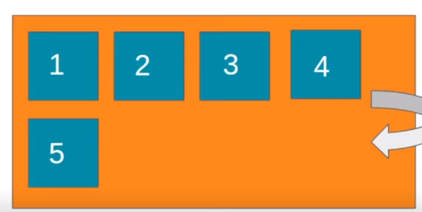

é a propriedade que define se os itens devem ou não quebrar a linha.
Por padrão eles não quebram linhas, isso faz com que os flex itens sejam compactados além do limite do conteúdo!
é o padrão, não permite a quebra de linha.
permite a quebra de linha assim que um dos flex itens não puder mais ser compactado.
permite a quebra de linha assim que um dos flex itens são puder mais ser compactado, porém na direção contrária da linha, acima.